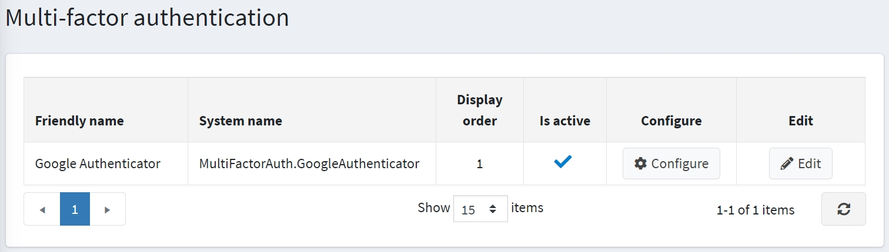
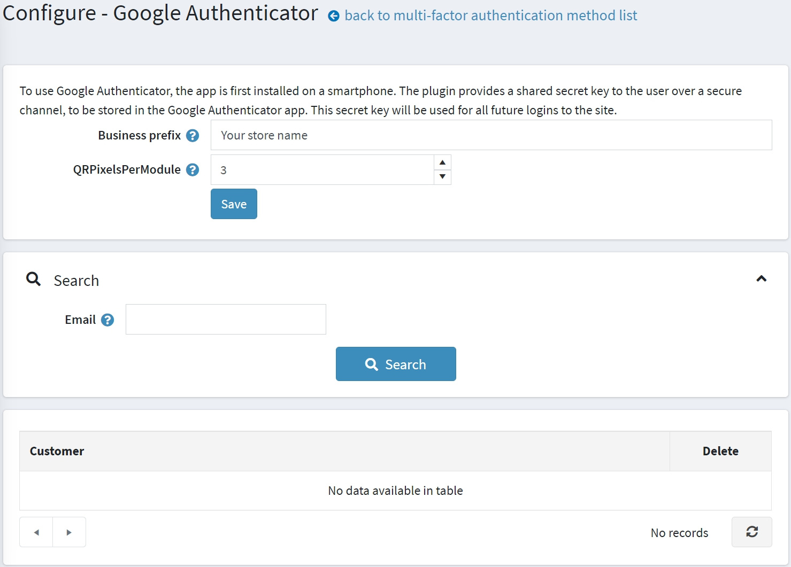
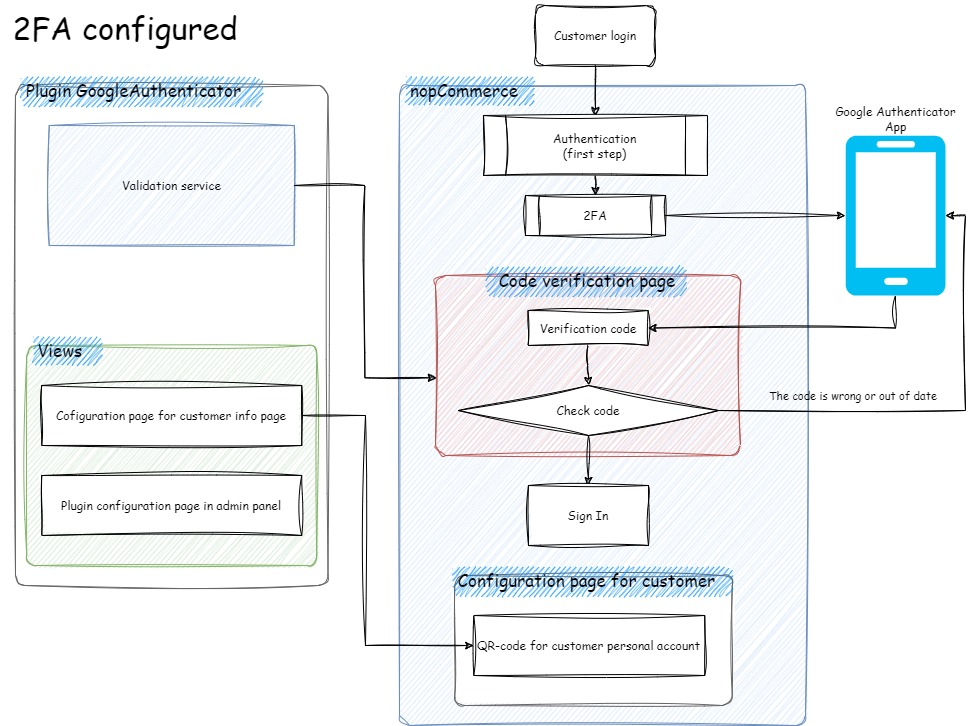
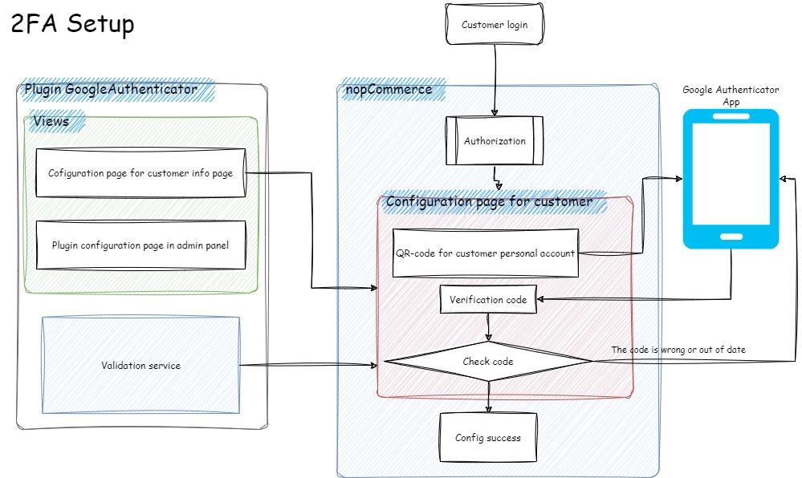
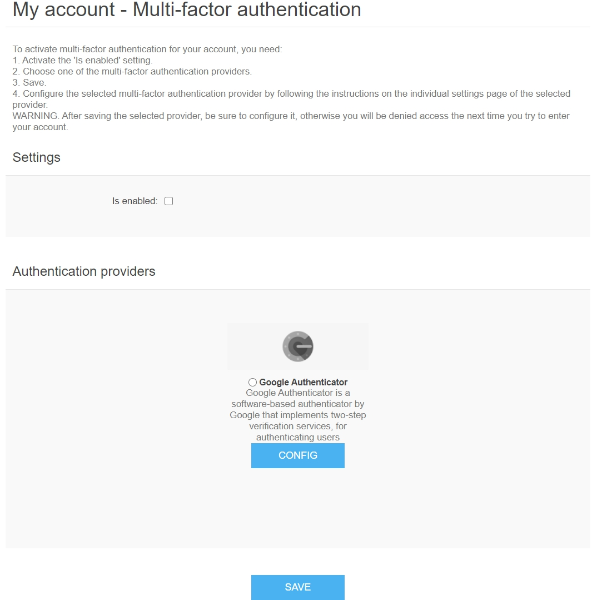

多因素驗證
多因素驗證 (Multifactor Authentication, MFA)（在我們的情況下，指雙因素驗證 – 2FA）是一種要求使用者提供兩個或更多驗證因素，以獲取資源存取權限的驗證方法。MFA 是強大身分與存取管理 (IAM) 政策的核心組成部分。MFA 不僅要求使用者名稱和密碼，還需要額外的一個或多個驗證因素，這降低了網路攻擊成功的可能性。
nopCommerce 透過 Google Authenticator 實作了內建的多因素驗證。您可以使用來自 市集 的外掛來設定其他方法。
管理多因素驗證方法
預設情況下，Google Authenticator 外掛未安裝。若要安裝此外掛，請前往 設定 → 本機外掛。
在 外掛名稱 欄位搜尋 Google Authenticator。
點擊 安裝 按鈕。
然後點擊 重新啟動應用程式以套用變更 按鈕來套用變更。
前往 設定 → 驗證 → 多因素驗證。系統將會顯示 多因素驗證 視窗：

點擊驗證方法旁邊的 編輯，並勾選 已啟用 以啟用該方法。您也可以定義該方法的 顯示順序。完成後點擊 更新 按鈕以儲存變更。
設定 Google Authenticator 外掛
點擊該方法的 設定 進行配置。系統將會顯示 設定 - Google Authenticator 頁面如下：

在此頁面上，您必須輸入：
- 您的 企業前綴，讓使用者能夠在 Google Authenticator 應用程式中區分您商店的帳號資訊。
- QRPixelsPerModule 以設定每個單元的像素數量。該單元是 QR 碼中的一個正方形。預設值為 3，對應 171 × 171 像素的影像。
然後點擊 儲存。
在此頁面上，您也可以使用 搜尋 面板透過電子郵件搜尋顧客。
運作原理
若要了解多因素驗證在 nopCommerce 中如何運作，請參考上方的圖表。
- 2FA 已設定 架構表示顧客已完成 2FA 設定的程序。

- 2FA 設定 架構表示顧客需要完成 2FA 設定的程序。

前台網站的多因素驗證頁面
若要配置多因素驗證，顧客應前往 我的帳戶 - 多因素驗證 頁面，顯示如下：

啟用 MFA 的步驟：
- 啟用 已啟用 設定。
- 選擇其中一個多因素驗證提供者（預設只有一個）。
- 儲存。
- 依照所選提供者之個別設定頁面上的說明，配置該多因素驗證提供者。
Warning
儲存所選的提供者後，請務必完成其設定；否則，下次您嘗試登入帳戶時將會被拒絕存取。